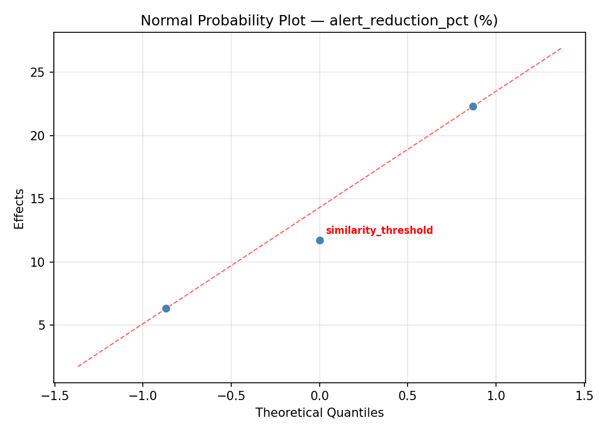
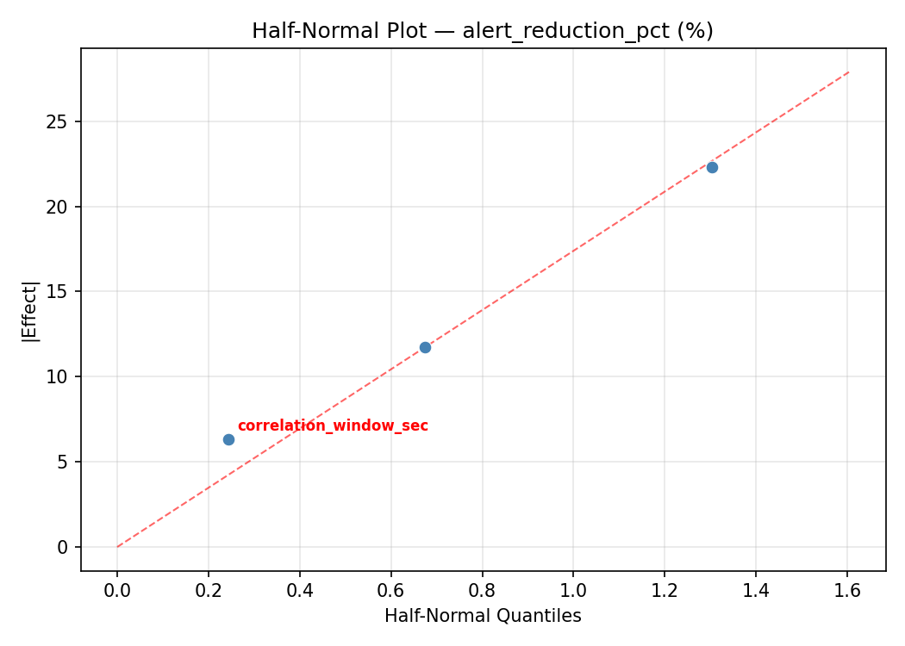
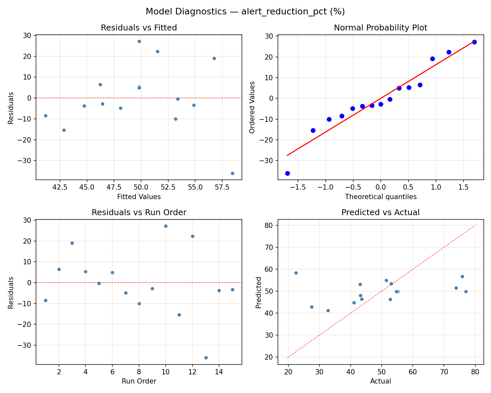
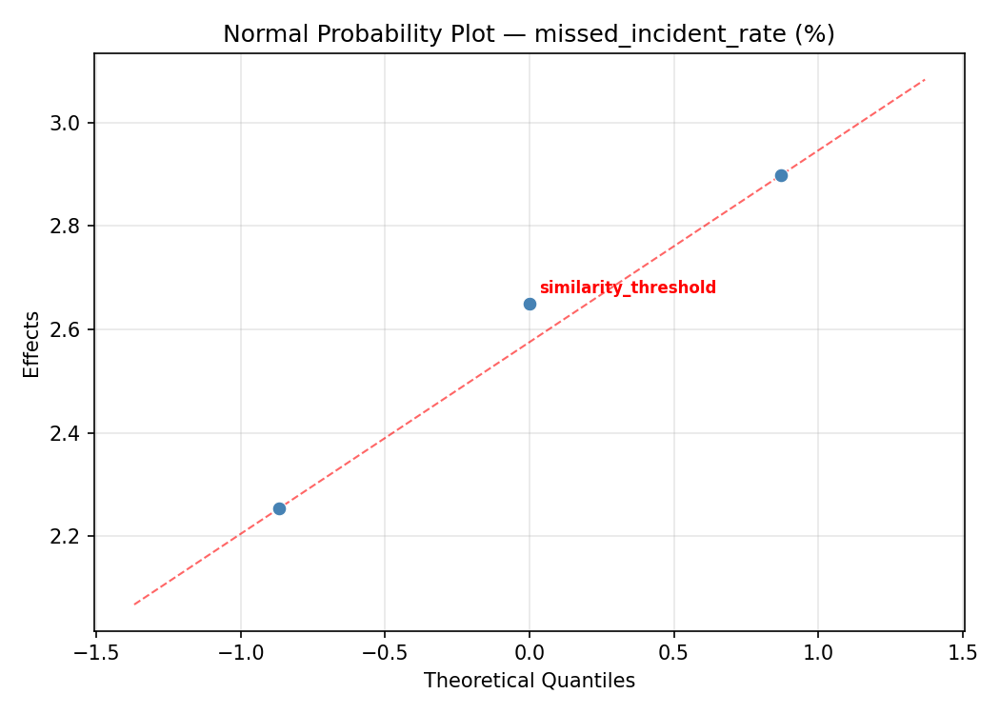
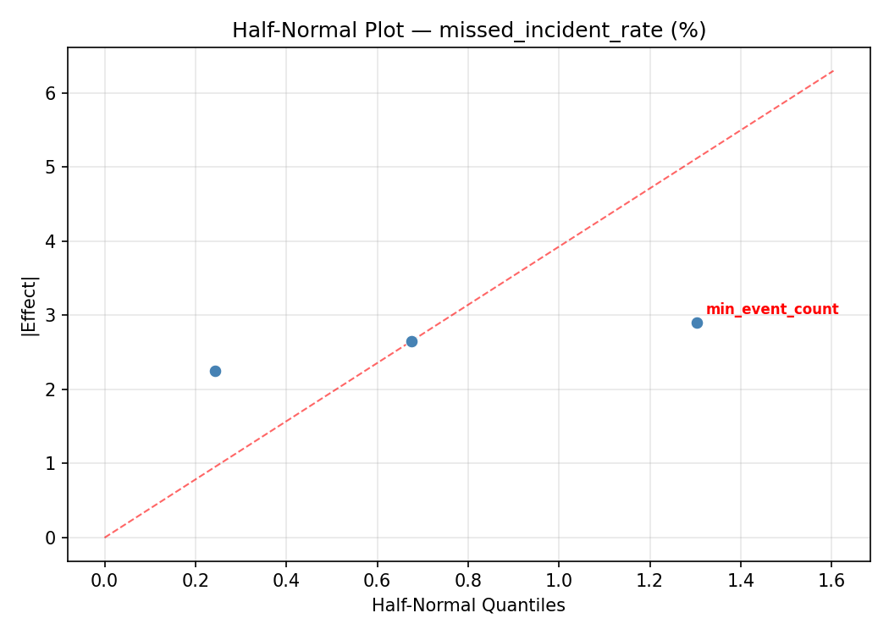
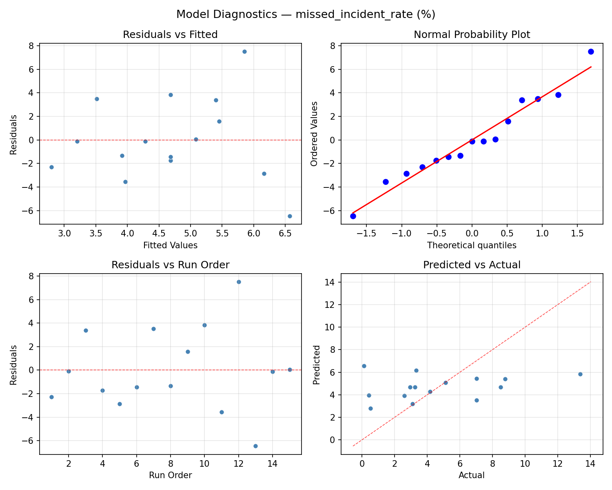

Summary
This experiment investigates siem alert correlation. Box-Behnken design to tune alert correlation window, similarity threshold, and event count for alert reduction.
The design varies 3 factors: correlation window sec (sec), ranging from 30 to 600, similarity threshold (ratio), ranging from 0.3 to 0.9, and min event count (events), ranging from 2 to 10. The goal is to optimize 2 responses: alert reduction pct (%) (maximize) and missed incident rate (%) (minimize). Fixed conditions held constant across all runs include siem platform = elastic_security, log sources = 12.
A Box-Behnken design was chosen because it efficiently fits quadratic models with 3 continuous factors while avoiding extreme corner combinations — requiring only 15 runs instead of the 8 needed for a full factorial at two levels.
Quadratic response surface models were fitted to capture potential curvature and factor interactions. The RSM contour plots below visualize how pairs of factors jointly affect each response.
Key Findings
For alert reduction pct, the most influential factors were min event count (38.2%), similarity threshold (33.7%), correlation window sec (28.1%). The best observed value was 77.0 (at correlation window sec = 315, similarity threshold = 0.9, min event count = 2).
For missed incident rate, the most influential factors were min event count (48.9%), correlation window sec (45.8%), similarity threshold (5.3%). The best observed value was 0.11 (at correlation window sec = 315, similarity threshold = 0.3, min event count = 10).
Recommended Next Steps
- Run confirmation experiments at the predicted optimal settings to validate the model.
- Consider whether any fixed factors should be varied in a future study.
Experimental Setup
Factors
| Factor | Low | High | Unit |
|---|
correlation_window_sec | 30 | 600 | sec |
similarity_threshold | 0.3 | 0.9 | ratio |
min_event_count | 2 | 10 | events |
Fixed: siem_platform = elastic_security, log_sources = 12
Responses
| Response | Direction | Unit |
|---|
alert_reduction_pct | ↑ maximize | % |
missed_incident_rate | ↓ minimize | % |
Configuration
{
"metadata": {
"name": "SIEM Alert Correlation",
"description": "Box-Behnken design to tune alert correlation window, similarity threshold, and event count for alert reduction"
},
"factors": [
{
"name": "correlation_window_sec",
"levels": [
"30",
"600"
],
"type": "continuous",
"unit": "sec"
},
{
"name": "similarity_threshold",
"levels": [
"0.3",
"0.9"
],
"type": "continuous",
"unit": "ratio"
},
{
"name": "min_event_count",
"levels": [
"2",
"10"
],
"type": "continuous",
"unit": "events"
}
],
"fixed_factors": {
"siem_platform": "elastic_security",
"log_sources": "12"
},
"responses": [
{
"name": "alert_reduction_pct",
"optimize": "maximize",
"unit": "%"
},
{
"name": "missed_incident_rate",
"optimize": "minimize",
"unit": "%"
}
],
"settings": {
"operation": "box_behnken",
"test_script": "use_cases/59_siem_alert_correlation/sim.sh"
}
}
Experimental Matrix
The Box-Behnken Design produces 15 runs. Each row is one experiment with specific factor settings.
| Run | correlation_window_sec | similarity_threshold | min_event_count |
|---|
| 1 | 315 | 0.3 | 2 |
| 2 | 315 | 0.6 | 6 |
| 3 | 600 | 0.6 | 10 |
| 4 | 600 | 0.6 | 2 |
| 5 | 315 | 0.6 | 6 |
| 6 | 315 | 0.6 | 6 |
| 7 | 30 | 0.6 | 10 |
| 8 | 600 | 0.3 | 6 |
| 9 | 315 | 0.3 | 10 |
| 10 | 600 | 0.9 | 6 |
| 11 | 30 | 0.6 | 2 |
| 12 | 315 | 0.9 | 10 |
| 13 | 30 | 0.3 | 6 |
| 14 | 30 | 0.9 | 6 |
| 15 | 315 | 0.9 | 2 |
Step-by-Step Workflow
1
Preview the design
$ python doe.py info --config use_cases/59_siem_alert_correlation/config.json
2
Generate the runner script
$ python doe.py generate --config use_cases/59_siem_alert_correlation/config.json \
--output use_cases/59_siem_alert_correlation/results/run.sh --seed 42
3
Execute the experiments
$ bash use_cases/59_siem_alert_correlation/results/run.sh
4
Analyze results
$ python doe.py analyze --config use_cases/59_siem_alert_correlation/config.json
5
Get optimization recommendations
$ python doe.py optimize --config use_cases/59_siem_alert_correlation/config.json
6
Multi-objective optimization
With 2 competing responses, use --multi to find the best compromise via Derringer–Suich desirability.
$ python doe.py optimize --config use_cases/59_siem_alert_correlation/config.json --multi
7
Generate the HTML report
$ python doe.py report --config use_cases/59_siem_alert_correlation/config.json \
--output use_cases/59_siem_alert_correlation/results/report.html
Features Exercised
| Feature | Value |
|---|
| Design type | box_behnken |
| Factor types | continuous (all 3) |
| Arg style | double-dash |
| Responses | 2 (alert_reduction_pct ↑, missed_incident_rate ↓) |
| Total runs | 15 |
Analysis Results
Generated from actual experiment runs using the DOE Helper Tool.
Response: alert_reduction_pct
Top factors: min_event_count (38.2%), similarity_threshold (33.7%), correlation_window_sec (28.1%).
ANOVA
| Source | DF | SS | MS | F | p-value |
|---|
| Source | DF | SS | MS | F | p-value |
| correlation_window_sec | 2 | 353.1933 | 176.5966 | 0.531 | 0.6073 |
| similarity_threshold | 2 | 552.8772 | 276.4386 | 0.832 | 0.4698 |
| min_event_count | 2 | 715.6447 | 357.8223 | 1.076 | 0.3855 |
| Lack | of | Fit | 6 | 1523.6742 | 253.9457 |
| Pure | Error | 2 | 664.8800 | | |
| Error | 8 | 2188.5542 | 332.4400 | | |
| Total | 14 | 3810.2693 | 272.1621 | | |
Pareto Chart

Main Effects Plot

Normal Probability Plot of Effects

Half-Normal Plot of Effects

Model Diagnostics

Response: missed_incident_rate
Top factors: min_event_count (48.9%), correlation_window_sec (45.8%), similarity_threshold (5.3%).
ANOVA
| Source | DF | SS | MS | F | p-value |
|---|
| Source | DF | SS | MS | F | p-value |
| correlation_window_sec | 2 | 45.5419 | 22.7709 | 1.027 | 0.4008 |
| similarity_threshold | 2 | 0.5973 | 0.2987 | 0.013 | 0.9866 |
| min_event_count | 2 | 54.3417 | 27.1709 | 1.226 | 0.3433 |
| Lack | of | Fit | 6 | 43.7549 | 7.2925 |
| Pure | Error | 2 | 44.3384 | | |
| Error | 8 | 88.0933 | 22.1692 | | |
| Total | 14 | 188.5743 | 13.4696 | | |
Pareto Chart

Main Effects Plot

Normal Probability Plot of Effects

Half-Normal Plot of Effects

Model Diagnostics

Response Surface Plots
3D surfaces fitted with quadratic RSM. Red dots are observed data points.
alert reduction pct correlation window sec vs min event count

alert reduction pct correlation window sec vs similarity threshold

alert reduction pct similarity threshold vs min event count

missed incident rate correlation window sec vs min event count

missed incident rate correlation window sec vs similarity threshold

missed incident rate similarity threshold vs min event count

Multi-Objective Optimization
When responses compete, Derringer–Suich desirability finds the best compromise.
Each response is scaled to a 0–1 desirability, then combined via a weighted geometric mean.
Overall Desirability
D = 0.6594
Per-Response Desirability
| Response | Weight | Desirability | Predicted | Dir |
|---|
alert_reduction_pct |
1.5 |
|
77.00 0.9545 77.00 % |
↑ |
missed_incident_rate |
1.0 |
|
8.51 0.3787 8.51 % |
↓ |
Recommended Settings
| Factor | Value |
|---|
correlation_window_sec | 600 sec |
similarity_threshold | 0.3 ratio |
min_event_count | 6 events |
Source: from observed run #10
Trade-off Summary
Sacrifice = how much worse than single-objective best.
| Response | Predicted | Best Observed | Sacrifice |
|---|
missed_incident_rate | 8.51 | 0.11 | +8.40 |
Top 3 Runs by Desirability
| Run | D | Factor Settings |
|---|
| #4 | 0.6528 | correlation_window_sec=315, similarity_threshold=0.9, min_event_count=10 |
| #6 | 0.6413 | correlation_window_sec=30, similarity_threshold=0.3, min_event_count=6 |
Model Quality
| Response | R² | Type |
|---|
missed_incident_rate | 0.3289 | linear |
Full Multi-Objective Output
============================================================
MULTI-OBJECTIVE OPTIMIZATION
Method: Derringer-Suich Desirability Function
============================================================
Overall desirability: D = 0.6594
Response Weight Desirability Predicted Direction
---------------------------------------------------------------------
alert_reduction_pct 1.5 0.9545 77.00 % ↑
missed_incident_rate 1.0 0.3787 8.51 % ↓
Recommended settings:
correlation_window_sec = 600 sec
similarity_threshold = 0.3 ratio
min_event_count = 6 events
(from observed run #10)
Trade-off summary:
alert_reduction_pct: 77.00 (best observed: 77.00, sacrifice: +0.00)
missed_incident_rate: 8.51 (best observed: 0.11, sacrifice: +8.40)
Model quality:
alert_reduction_pct: R² = 0.2435 (linear)
missed_incident_rate: R² = 0.3289 (linear)
Top 3 observed runs by overall desirability:
1. Run #10 (D=0.6594): correlation_window_sec=600, similarity_threshold=0.3, min_event_count=6
2. Run #4 (D=0.6528): correlation_window_sec=315, similarity_threshold=0.9, min_event_count=10
3. Run #6 (D=0.6413): correlation_window_sec=30, similarity_threshold=0.3, min_event_count=6
Full Analysis Output
=== Main Effects: alert_reduction_pct ===
Factor Effect Std Error % Contribution
--------------------------------------------------------------
min_event_count 16.5429 4.2596 38.2%
similarity_threshold 14.6179 4.2596 33.7%
correlation_window_sec 12.1750 4.2596 28.1%
=== ANOVA Table: alert_reduction_pct ===
Source DF SS MS F p-value
-----------------------------------------------------------------------------
correlation_window_sec 2 353.1933 176.5966 0.531 0.6073
similarity_threshold 2 552.8772 276.4386 0.832 0.4698
min_event_count 2 715.6447 357.8223 1.076 0.3855
Lack of Fit 6 1523.6742 253.9457 0.764 0.6626
Pure Error 2 664.8800 332.4400
Error 8 2188.5542 332.4400
Total 14 3810.2693 272.1621
=== Summary Statistics: alert_reduction_pct ===
correlation_window_sec:
Level N Mean Std Min Max
------------------------------------------------------------
30 4 54.0750 15.9732 43.1000 77.0000
315 7 51.8857 18.7935 22.4000 75.8000
600 4 41.9000 13.8140 27.5000 54.7000
similarity_threshold:
Level N Mean Std Min Max
------------------------------------------------------------
0.3 4 59.5750 11.7279 51.5000 77.0000
0.6 7 44.9571 15.1247 27.5000 73.8000
0.9 4 48.5250 22.1527 22.4000 75.8000
min_event_count:
Level N Mean Std Min Max
------------------------------------------------------------
10 4 51.6750 18.5052 32.7000 75.8000
2 4 38.6000 15.9104 22.4000 53.0000
6 7 55.1429 14.7641 41.0000 77.0000
=== Main Effects: missed_incident_rate ===
Factor Effect Std Error % Contribution
--------------------------------------------------------------
min_event_count 4.3932 0.9476 48.9%
correlation_window_sec 4.1129 0.9476 45.8%
similarity_threshold 0.4743 0.9476 5.3%
=== ANOVA Table: missed_incident_rate ===
Source DF SS MS F p-value
-----------------------------------------------------------------------------
correlation_window_sec 2 45.5419 22.7709 1.027 0.4008
similarity_threshold 2 0.5973 0.2987 0.013 0.9866
min_event_count 2 54.3417 27.1709 1.226 0.3433
Lack of Fit 6 43.7549 7.2925 0.329 0.8775
Pure Error 2 44.3384 22.1692
Error 8 88.0933 22.1692
Total 14 188.5743 13.4696
=== Summary Statistics: missed_incident_rate ===
correlation_window_sec:
Level N Mean Std Min Max
------------------------------------------------------------
30 4 5.3575 2.8609 2.5900 8.5100
315 7 5.9329 4.3035 0.1100 13.3700
600 4 1.8200 1.5662 0.4200 3.2500
similarity_threshold:
Level N Mean Std Min Max
------------------------------------------------------------
0.3 4 4.9600 2.5558 2.9500 8.5100
0.6 7 4.4857 4.5243 0.4200 13.3700
0.9 4 4.7500 3.8972 0.1100 8.7700
min_event_count:
Level N Mean Std Min Max
------------------------------------------------------------
10 4 3.7050 3.5438 0.5100 8.7700
2 4 2.2425 2.4046 0.1100 5.1300
6 7 6.6357 3.6334 3.1000 13.3700
Optimization Recommendations
=== Optimization: alert_reduction_pct ===
Direction: maximize
Best observed run: #10
correlation_window_sec = 315
similarity_threshold = 0.9
min_event_count = 2
Value: 77.0
RSM Model (linear, R² = 0.3922, Adj R² = 0.2264):
Coefficients:
intercept +49.8067
correlation_window_sec +0.3250
similarity_threshold +7.8250
min_event_count -11.2000
RSM Model (quadratic, R² = 0.7687, Adj R² = 0.3524):
Coefficients:
intercept +68.2333
correlation_window_sec +0.3250
similarity_threshold +7.8250
min_event_count -11.2000
correlation_window_sec*similarity_threshold +2.0000
correlation_window_sec*min_event_count -3.0000
similarity_threshold*min_event_count -5.1000
correlation_window_sec^2 -10.9167
similarity_threshold^2 -12.4667
min_event_count^2 -11.1667
Curvature analysis:
similarity_threshold coef=-12.4667 concave (has a maximum)
min_event_count coef=-11.1667 concave (has a maximum)
correlation_window_sec coef=-10.9167 concave (has a maximum)
Notable interactions:
similarity_threshold*min_event_count coef=-5.1000 (antagonistic)
correlation_window_sec*min_event_count coef=-3.0000 (antagonistic)
correlation_window_sec*similarity_threshold coef=+2.0000 (synergistic)
Predicted optimum (from quadratic model, at observed points):
correlation_window_sec = 315
similarity_threshold = 0.9
min_event_count = 2
Predicted value: 68.7250
Surface optimum (via L-BFGS-B, quadratic model):
correlation_window_sec = 355.501
similarity_threshold = 0.735862
min_event_count = 3.504
Predicted value: 73.5227
Model quality: Good fit — general trends are captured, some noise remains.
Factor importance:
1. min_event_count (effect: 22.4, contribution: 44.2%)
2. similarity_threshold (effect: 18.7, contribution: 36.9%)
3. correlation_window_sec (effect: 9.6, contribution: 18.9%)
=== Optimization: missed_incident_rate ===
Direction: minimize
Best observed run: #13
correlation_window_sec = 315
similarity_threshold = 0.3
min_event_count = 10
Value: 0.11
RSM Model (linear, R² = 0.0423, Adj R² = -0.2189):
Coefficients:
intercept +4.6827
correlation_window_sec -0.4025
similarity_threshold +0.6775
min_event_count -0.6125
RSM Model (quadratic, R² = 0.3934, Adj R² = -0.6985):
Coefficients:
intercept +8.3633
correlation_window_sec -0.4025
similarity_threshold +0.6775
min_event_count -0.6125
correlation_window_sec*similarity_threshold +0.8625
correlation_window_sec*min_event_count -0.1675
similarity_threshold*min_event_count -0.7675
correlation_window_sec^2 -2.0804
similarity_threshold^2 -3.5104
min_event_count^2 -1.3104
Curvature analysis:
similarity_threshold coef=-3.5104 concave (has a maximum)
correlation_window_sec coef=-2.0804 concave (has a maximum)
min_event_count coef=-1.3104 concave (has a maximum)
Notable interactions:
correlation_window_sec*similarity_threshold coef=+0.8625 (synergistic)
similarity_threshold*min_event_count coef=-0.7675 (antagonistic)
Predicted optimum (from linear model, at observed points):
correlation_window_sec = 315
similarity_threshold = 0.9
min_event_count = 2
Predicted value: 5.9727
Surface optimum (via L-BFGS-B, linear model):
correlation_window_sec = 600
similarity_threshold = 0.3
min_event_count = 10
Predicted value: 2.9902
Model quality: Weak fit — consider adding center points or using a different design.
Factor importance:
1. similarity_threshold (effect: 3.9, contribution: 51.9%)
2. correlation_window_sec (effect: 2.1, contribution: 28.1%)
3. min_event_count (effect: 1.5, contribution: 20.0%)